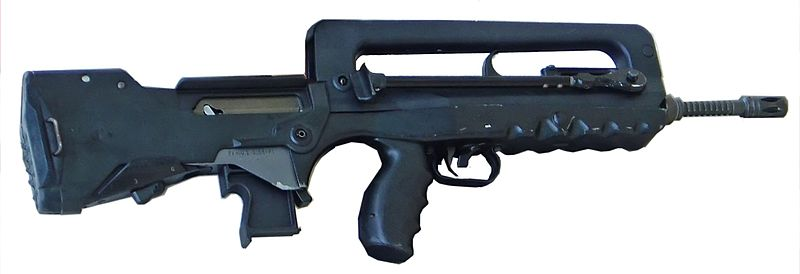

Suscríbete a nuestros boletines ahora y mantente al día con nuevas colecciones y ofertas exclusivas.
Soporte al cliente
123-456-7890
123-456-7890
Rifles de asalto
Introduccion
Un fusil de asalto es un fusil diseñado para el combate, de fuego selectivo (capaz de disparar tanto en modo automático como en modo semiautomático)
Etimologia
El término fusil de asalto generalmente se atribuye a Adolf Hitler, quien usó la palabra alemana Sturmgewehr (que se traduce como "rifle de asalto") como el nuevo nombre de la MP 43 (Maschinenpistole), posteriormente conocido como el Sturmgewehr 44.La propaganda aliada sugirió que el nombre fue elegido con fines propagandísticos, pero el objetivo principal era diferenciar la Sturmgewehr de los subfusiles alemanes como la MP40.
Se ha sugerido, sin embargo, que la Heereswaffenamt fue la responsable del nombre Sturmgewehr, y Hitler no tuvo ningún aporte además de firmar la orden de producción. Además, Hitler inicialmente se opuso a la idea de un nuevo rifle de infantería, ya que Alemania carecía de la capacidad industrial para reemplazar los 12 000 000 de rifles Karabiner 98k que ya estaban en servicio, y solo cambió de opinión una vez que lo vio de primera mano.
Historia
Desde comienzos del siglo XX se experimentó con munición intermedia y diseños de fusiles semiautomáticos o automáticos como medios para aumentar la potencia de fuego del infante. Entre ellos, se destacarían:
- Fusil Mondragón, El primer fusil semiautomático y automático de la historia diseñado en 1884, es el primero en ser empleado en un ejército desde 1901 por el Ejército Mexicano, fue empleado en la Primera Guerra Mundial por el Imperio Alemán, Imperio Austrohúngaro, Imperio del Japón, República de Weimar, después en la Segunda Guerra Mundial en Francia de Vichy, República española, Unión Soviética, Filipinas también fue usado por países como Corea del Sur, China, Brasil, República de China y Chile.
- Winchester Modelo M1907, en calibre 9x35SR. Precursor directo en concepto de la Carabina M1, fue empleado por los franceses en la Primera Guerra Mundial como eficaz arma de trinchera.
- Avtomat Fiódorova.Adoptado en 1916, es el primer fusil de asalto operativo adoptado oficialmente. Por la premura de la guerra, se empleó en calibre 6,5x50 arisaka en lugar del 6,5 mm Fiódorov previsto por su creador. La derrota rusa y la Revolución de Octubre impidieron la adopción definitiva de este modelo tan adelantado a su tiempo.

- Ribeyrolles M1918. De una concepción similar al Winchester Modelo M1907, lo más destacado de esta arma es su munición 8 x 35mm, de una concepción muy cercana a lo que acabaría siendo la munición intermedia adoptada tres décadas más tarde por alemanes o rusos.
Desarrollado por Mateo Gamalero © 2024